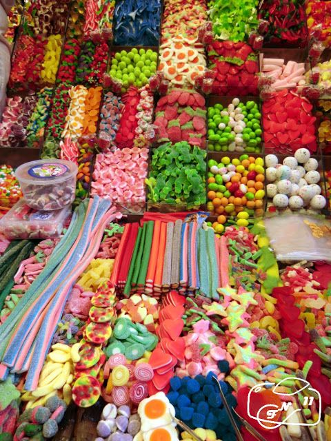
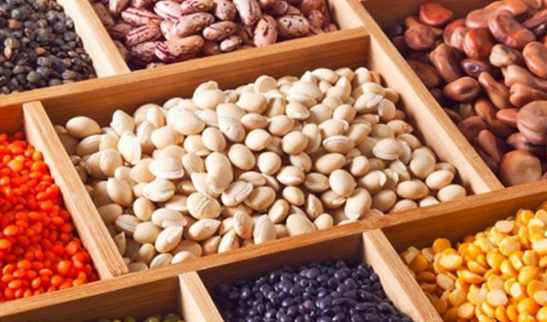
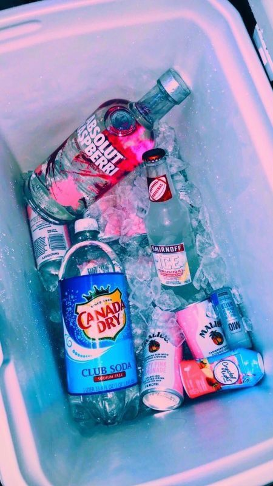
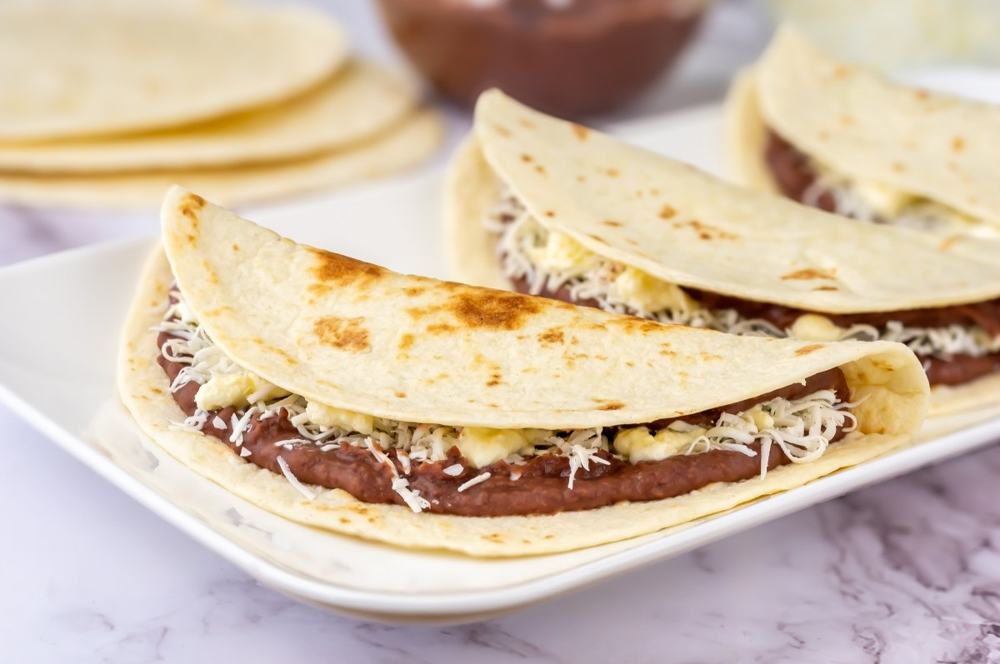
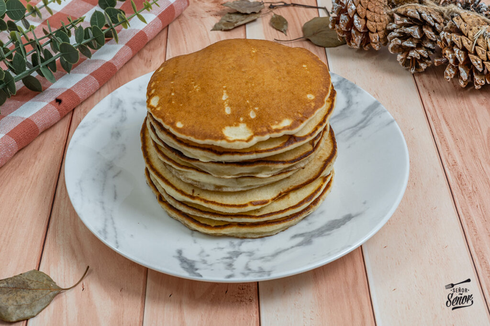

CONTACTANOS 9816-1387 mainordimar@gmail.com |
¿Quiénes somos? Nos categorizamos como una pequeña empresa que ofrece sus servicios al público en general, sean personas locales o visitante. Somos conscientes que el reconocer tus necesidades y gustos es esencial para ti y para las demás personas, por ello tratamos cada día de ser mejor y contar con los diferentes productos y servicios necesarios para cubrir tus necesidades y gustos. |
| NUESTRA VISION Y MISION |
VISION Brindar a nuestra comunidad productos de calidad, frescos y accesibles, ofreciendo una atención cercana y amable. Nos esforzamos cada día por mantener surtido nuestro supermercado, apoyando la economía local y satisfaciendo las necesidades alimenticias de las familias de nuestra zona. |
|---|
MISION Ser los proveedores preferidos de nuestra comunidad, reconocido por su servicio confiable, su ambiente familiar y su compromiso con ofrecer productos tradicionales y esenciales que contribuyan al bienestar de nuestros clientes. |
|---|
| Contamos con productos como ser... |
|---|
| Golosinas |
|---|

| Granos básicos |
|---|

| Bebidas |
|---|

| Estamos ubicados en Colonia San Carlos continua a la cancha de futbol, donde podras disfrutar del mejor servicio de atención, y merendar específicos platillos típicos de nuestra región, a precios accesibles y de la mejor calidad. |
|---|
| Conoce mas de nuestra especialidad. |
|---|
|  |  |
 |
|---|---|---|
| Las deliciosas baleadas rellenas de frijoles, mantequilla, aguacate y muchos mas complementos. | Un delicioso platillo de Yuka freida bañada en salsa y arropada con una manta de repollo. | La especialidad de la casa se encuentra en los panqueques que podras disfrutar en la temporada de frio que se aproxima. |
| CONTACTANOS 9816-1387 mainordimar@gmail.com |
|---|
| No te olvides de contactarnos |
| Creado por MAINOR ALONSO DIAZ MARTINEZ |
|---|